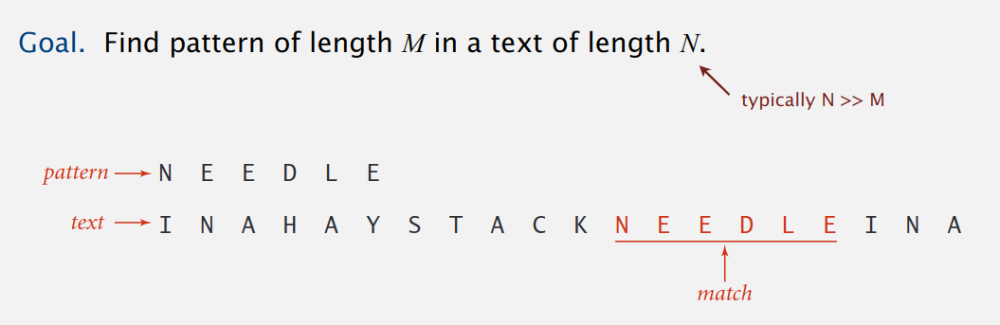
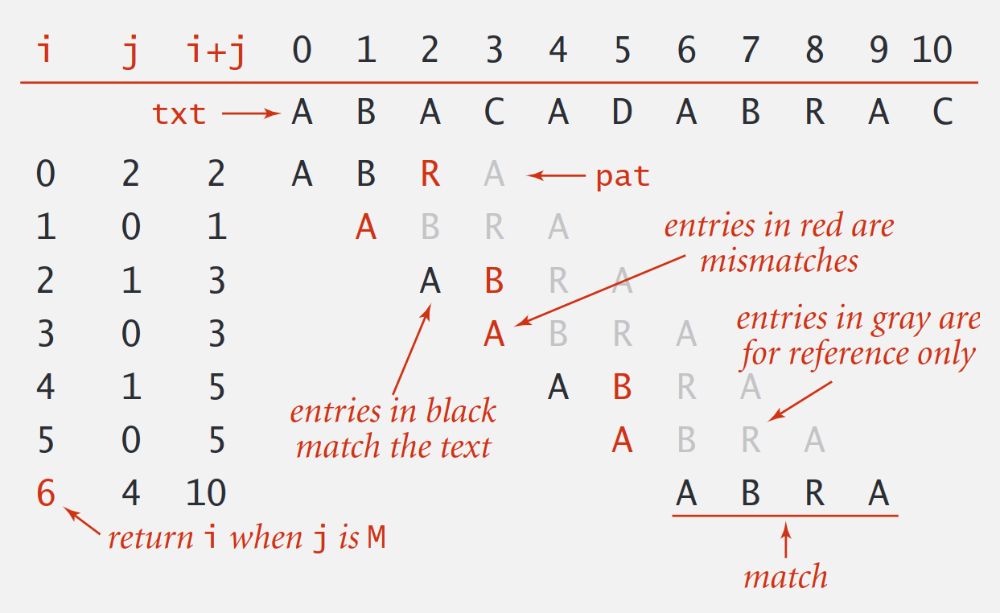
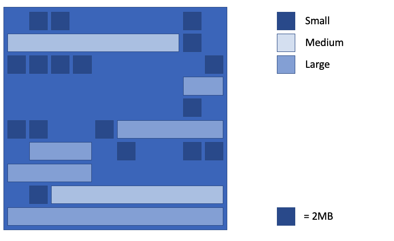
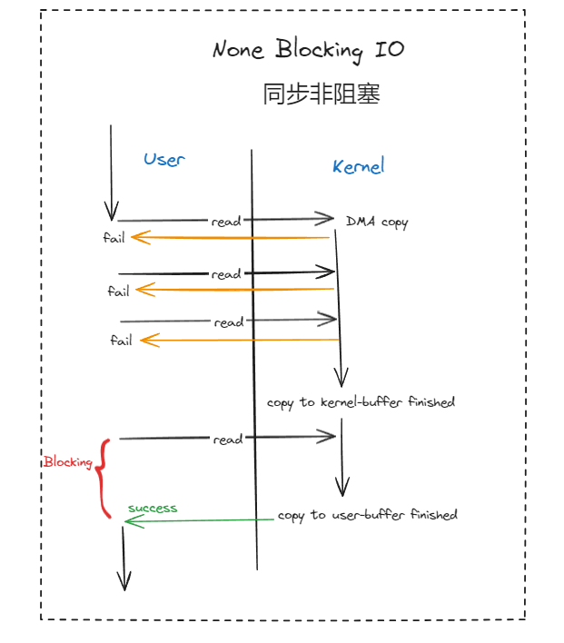
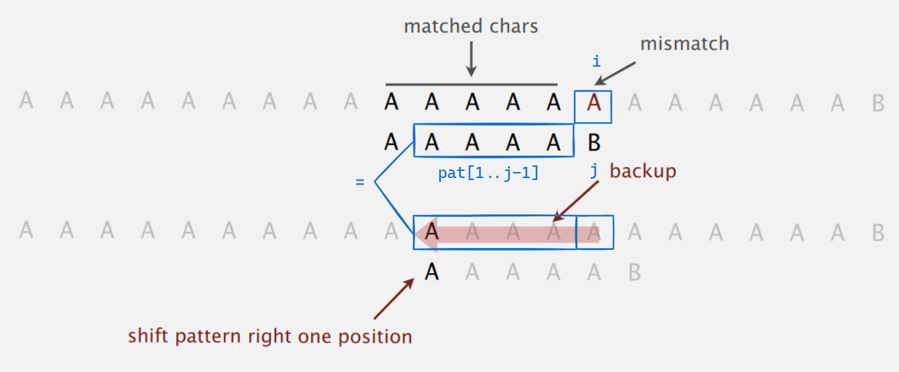
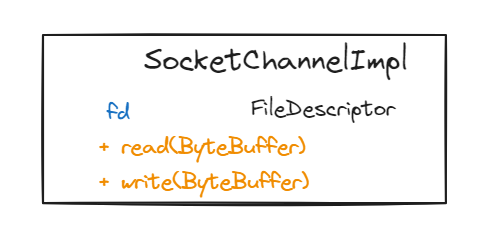

字符串搜索¶

字符串搜索要解决的问题就是从长度为N的文本串中，搜索长度为M的模式串，一般N是远远大于M的。
暴力搜索¶
i是文本串的索引j是模式串的索引

public static int search(String pat, String txt) {
int M = pat.length();
int N = txt.length();
for (int i = 0; i <= N - M; i++) {
int j;
for (j = 0; j < M; j++)
if (txt.charAt(i+j) != pat.charAt(j))
break;
if (j == M)
return i; // index in text where pattern starts
}
return N; // not found
}
暴力搜索中，需要不断回退文本串指针，时间复杂度为 O(M*N), 性能有优化空间，但实际场景中也足够使用了，JDK 使用暴力搜索实现 indexOf(String str)。那还有优化空间吗？理论已经证明，可以在线性复杂度实现
字符串搜索，下面将介绍几种搜索算法。
KMP 搜索¶
KMP 引入¶
在某些情况下，文本串指针回退是比较麻烦的，比如网络流（stream）或标准输入，是否存在一种算泛，不需要回退文本串指针，就可以实现文本串与模式串匹配？神奇的 KMP 算法刚好就具备这个特性。
KMP 的基本思想：当遇到文本串于模式串不匹配的字符时，我们其实已经得知了文本串的一个子串是什么（就是模式串中不匹配字符之前的字符串）。我们可以利用这些已知子串避免文本串指针不断回溯。

比如上面的文本串和模式串匹配过程中，i是文本串的下标，j 是模式串的下标，当文本串指针指向图中i这个位置时，文本串中的字符B和模式串中的字符A不匹配了：
暴力搜索算法
将文本串指针回溯到下标为
2的位置，将j重置为0，继续匹配发现不匹配，再将文本串指针回溯到下标为
3的位置，将j重置为0，继续匹配发现不匹配，再将文本串指针回溯到下标为
4的位置，将j重置为0，继续匹配发现不匹配，再将文本串指针回溯到下标为
5的位置，将j重置为0，继续匹配发现不匹配，再将文本串指针回溯到下标为
6的位置，将j重置为0，继续匹配发现匹配，继续匹配
取巧一下：
其实我们可以让
i保持不变，将j置为1，开始继续匹配，因为我们可以通过肉眼看到文本串的前4个字符都是A，都与模式串的第一个字符B不匹配。
这次取巧仅限于当前这种情况，但是，我们凭借已经匹配的结果得知：文本串中当前匹配位置的左边的j-1个字符和模式串的前j-1个字符是相同的，利用这个信息，只需要将j重置为某个值，就不需要回退i，而 KMP 算法就是提前利用模式串本身，推断出一份j的重置表。

DFA 转移模拟¶
使用 确定有限状态自动机 DFA（deterministic finite-state automaton）可以有效的说明 KMP 模式匹配的过程。

dfa[][]是状态机数组，可以先不看，直接看状态机图。模式串的长度就是状态机的状态数，状态j就是相当于使用文本串已成功匹配模式串的前j个字符，比如状态0就是相当于使用文本串已成功匹配模式串的前0个字符，状态1就是相当于使用文本串已成功匹配模式串的前1个字符，状态6就是相当于使用文本串已成功匹配模式串的前6个字符（也就是模式串已经全部匹配成功），如果状态能转移到6，那就说明文本串和模式串已经匹配成功。
文本串可以不断的输入到状态机，如果当前输入字符和模式串匹配，状态机就可以顺利前进一位（右移，j=j+1），如果不匹配，那状态机就回后退或自旋（左移或不动，j=j-[0..j]）。
再回头看状态机数组dfa[][], 设当前对比的文本字符下标为i，当前对比的字符在文本串中为txt[i]，设为c，当前匹配成功的模式串长度为j，dfa[c][j]=dfa[txt[i]][j] 就代表当前匹配到文本串下标为i的位置，并且已经在模式串成功匹配了长度j,数组中的值就代表这一步需要转移的目标状态。换而言之，数组第一维标识当前对比的文本串字符，这个例子中的取值范围为{A,B,C}，数组第二维为已经匹配的模式串长度，也就是状态机的所有状态，这个例子中的取值范围为{0,1,2,3,4,5,6}，现在开始向状态机输入文本串的字符：
从状态
0开始(即开始匹配成功的长度为0)，输入文本字符txt[i]，转移到dfa[txt[i]][0]的值对应的状态如果遇到输入
A（即A=c=txt[i]），查看到dfa[A][0]的值为1，也就是状态机需要转移到1这个状态如果遇到输入
B（即B=c=txt[i]），查看到dfa[B][0]的值为0，也就是状态机需要转移到0这个状态如果遇到输入
C（即C=c=txt[i]），查看到dfa[C][0]的值为0，也就是状态机需要转移到0这个状态
进入
1这状态后(即已经匹配成功的长度为1)，继续输入下一个文本字符txt[i++]，转移到dfa[txt[i]][1]的值对应的状态如果遇到输入
A（即A=c=txt[i]），查看到dfa[A][1]的值为1，也就是状态机需要转移到1这个状态如果遇到输入
B（即B=c=txt[i]），查看到dfa[B][1]的值为2，也就是状态机需要转移到2这个状态如果遇到输入
C（即C=c=txt[i]），查看到dfa[C][1]的值为0，也就是状态机需要转移到0这个状态
进入
2这状态后(即已经匹配成功的长度为2)，继续输入下一个文本字符txt[i++]，转移到dfa[txt[i]][2]的值对应的状态如果遇到输入
A（即A=c=txt[i]），查看到dfa[A][2]的值为3，也就是状态机需要转移到3这个状态如果遇到输入
B（即B=c=txt[i]），查看到dfa[B][2]的值为0，也就是状态机需要转移到0这个状态如果遇到输入
C（即C=c=txt[i]），查看到dfa[C][2]的值为0，也就是状态机需要转移到0这个状态
进入
3这状态后(即已经匹配成功的长度为3)，继续输入下一个文本字符txt[i++]，转移到dfa[txt[i]][3]的值对应的状态如果遇到输入
A（即A=c=txt[i]），查看到dfa[A][3]的值为1，也就是状态机需要转移到1这个状态如果遇到输入
B（即B=c=txt[i]），查看到dfa[B][3]的值为4，也就是状态机需要转移到4这个状态如果遇到输入
C（即C=c=txt[i]），查看到dfa[C][3]的值为0，也就是状态机需要转移到0这个状态
进入
4这状态后(即已经匹配成功的长度为4)，继续输入下一个文本字符txt[i++]，转移到dfa[txt[i]][4]的值对应的状态如果遇到输入
A（即A=c=txt[i]），查看到dfa[A][4]的值为5，也就是状态机需要转移到5这个状态如果遇到输入
B（即B=c=txt[i]），查看到dfa[B][4]的值为0，也就是状态机需要转移到0这个状态如果遇到输入
C（即C=c=txt[i]），查看到dfa[C][4]的值为0，也就是状态机需要转移到0这个状态
进入
5这状态后(即已经匹配成功的长度为5)，继续输入下一个文本字符txt[i++]，转移到dfa[txt[i]][5]的值对应的状态如果遇到输入
A（即A=c=txt[i]），查看到dfa[A][5]的值为1，也就是状态机需要转移到1这个状态如果遇到输入
B（即B=c=txt[i]），查看到dfa[B][5]的值为4，也就是状态机需要转移到4这个状态如果遇到输入
C（即C=c=txt[i]），查看到dfa[C][5]的值为6，也就是状态机需要转移到6这个状态，而这也是状态机的终止状态，代表匹配成功。
使用 DFA 实现的字符串搜索算法代码很简单，具体如下
// N: length of txt
// M: length of pattern
// j: current state of DFA
public int search(String txt) {
int i, j, N = txt.length();
for (i = 0, j = 0; i < N && j < M; i++) {
j = dfa[txt.charAt(i)][j];
}
if (j == M) {
return i - M; // matched
} else {
return -1; // not matched
}
}
现在的问题是，dfa 数组如何构造？
构造 DFA 数组¶
字符匹配¶
如果文本串和模式串总是匹配成功，那就意味着状态机可以一直向右转移，dfa[c][j]=j+1，具体如下图所示：
字符不匹配¶
如果遇到文本串和模式串不匹配的字符，当前处于状态j，下一个文本字符c和模式字符不匹配，即c != pat.charAt(j)，当前文本字符之前的j-1字符其实就等与模式串中的pat[1..j-1]（因为前面都是匹配成功的），要计算出dfa[c][j]，只需从0状态开始，将pat[1..j-1]输入到状态机，再将字符c输入状态机，得到的状态就是需要转移到的状态，也就是dfa[c][j]的值，具体如下图所示：
比如当前状态j=5，只需要将pat[1..j-1](BABA)输入状态机，状态转移到3，再将下一个文本字符c继续输入，得到的状态就是dfa[c][5]:
如果
c为A，可以看到之前已经计算出来dfa[A][3]为1，那么dfa[A][5]就是1如果
c为B，可以看到之前已经计算出来dfa[B][3]为4，那么dfa[B][5]就是4
备注
为什么将pat[1..j-1]输入到状态机，再将字符c输入状态机，得到的状态就是需要转移到的状态？
以下图为例进行说明，当前处于状态j，模式字符pat[j]为B，下一个文本字符txt[i]为A，匹配失败，但我们知道pat[0..j-1]和txt[i-j, i-1]都是匹配成功的，所以两者相等。如果使用暴力匹配，接下来将从txt[i-j+1]（也就是pat[1]）位置重新开始匹配，也就是说pat[1..j-1]再加上字符c，就是接下来使用暴力算法所需要匹配的字符串，只是说我们利用之前的状态机（这个子串最顺利也就只能抵达j-2这个状态，而j之前的状态机值我们已经计算出来了），可以直接知道这个子串最终会转移到哪个状态。

接下来，将上面的例子一般化，将pat[1..j-1]输入状态及后得到的状态记为X，就可以利用状态X得到状态j的状态值，dfa[c][j]=dfa[c][X]，例如，：
dfa[A][5]=dfa[A][X]dfa[B][5]=dfa[B][X]dfa[C][5]=dfa[B][X]

最终给出计算dfa[][]的代码